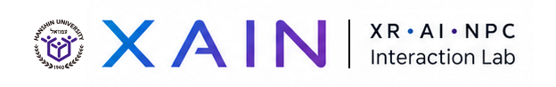
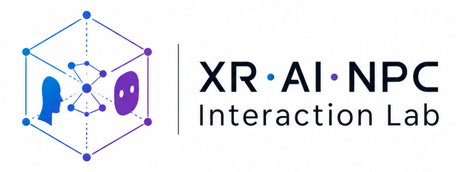

Human-Centered
기술보다 경험을 먼저 보고, 인간이 지능형 에이전트와 관계를 맺는 방식을 설계합니다.

XR · AI · NPC Interaction Lab
몰입형 세계를 위한 살아 있는 지능을 설계합니다.
XAIN Lab은 XR 공간에서 생성형 AI 기반 NPC와 인간의 상호작용, 감성 경험, 인터랙티브 서사를 연구하는 연구실입니다.

About XAIN Lab
XAIN Lab은 확장현실, 인공지능, NPC 상호작용을 융합하여 가상공간 속 캐릭터가 단순한 스크립트 오브젝트를 넘어 기억, 감정, 자율성을 가진 지능형 에이전트로 발전하는 방식을 연구합니다.
연구는 게임, 메타버스, 디지털 휴먼, 교육 시뮬레이션, 인터랙티브 콘텐츠로 확장됩니다. 기술 구현뿐 아니라 사용자가 느끼는 몰입감, 신뢰감, 감정적 공감을 중심으로 설계합니다.
기술보다 경험을 먼저 보고, 인간이 지능형 에이전트와 관계를 맺는 방식을 설계합니다.
공간, 맥락, 행동 데이터가 연결되는 XR 환경에서 자연스러운 상호작용을 만듭니다.
캐릭터의 대화와 행동이 서사 경험으로 이어지는 인터랙티브 스토리텔링을 연구합니다.
Research Areas
VR, AR, MR 환경에서 사용자의 공간 인지, 몰입감, 인터페이스 경험을 분석하고 설계합니다.
LLM과 멀티모달 AI를 활용해 기억, 성격, 목표를 가진 지능형 NPC와 에이전트를 구현합니다.
감정, 신뢰, 사회적 존재감, 상호작용 리듬이 몰입형 경험에 미치는 영향을 연구합니다.
AI 캐릭터의 대화와 행동이 사용자 선택에 반응하며 변화하는 서사 구조를 설계합니다.
Projects
Achievements
XAIN Lab의 연구 성과는 국내외 학술 활동, 산학 협력, 정부 지원 프로젝트로 구성됩니다.
Publications
XAIN Lab의 연구 성과를 담은 학술 논문, 저널 논문, 국제 학술대회 발표 현황입니다.
Members
오석희 교수
XR, AI NPC, 인터랙티브 콘텐츠, 인간-AI 상호작용 분야의 연구와 산학협력을 이끕니다.
Contact
AI NPC, XR 콘텐츠, 디지털 휴먼, 인터랙티브 스토리텔링, 감성 상호작용 연구에 관심 있는 학생과 협력 기관의 연락을 기다립니다.
Emailyour.email@university.ac.kr
LocationUniversity Research Lab, Republic of Korea
KeywordsXR, Generative AI, NPC, Digital Human, Interactive Storytelling